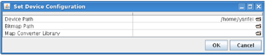

Configuring the BFM Viewer
The BFM Viewer requires some mandatory configuration and offers additional optional settings.
About this task
The paths of the device directory and the Map Converter library must be configured when the BFM Viewer is first started. The BFM Viewer stores these settings across restarts, and they can be reconfigured at any time.
A range of display settings come with default settings but can optionally be adapted to your requirements.
Before you begin
Start the BFM Viewer (as described in Starting the BFM Viewer).
Procedures
Setting paths
The initial configuration of the required path information is described in Starting the BFM Viewer.
To edit the path settings later:
- From the Settings menu, choose Global.
The Global Settings window opens.

- From the Session
menu, choose Change Device.
The Set Device Configuration window opens, showing the path to the currently active device:

- Click the desired setting (for example, Device Path).
A standard Open dialog opens.
- Choose the desired new folder (for Device Path) or file (for Map Converter Library) and click OK to close the Open dialog.
- In the Global Settings window, click either of these buttons:
- Apply to activate the new settings and keep the window open
- OK to activate the settings and close the window
Note that clicking either button resets the color scheme, filters, and display options to their defaults.
Note Generating map converter files is described in Setting up address scrambling in Testing High-Speed Memory Devices.
Setting other options
Set the other options directly in the Global Settings window, according to their data type:
- To change a text entry, double-click it and choose the desired option from a pop-up menu.
- To change a numeric entry, select it and enter the new number.
- To change a checkbox setting, click the checkbox.
The meaning of the available options is described in the description of the Global Settings window.
Results
The device settings and default display options are configured according to your preferences
What to do next
Functional changes
- Introduced before SmarTest 6.3.2
- MTP 3.2.1: Both the Global Setting window and the Set Device Configuration window are updated.